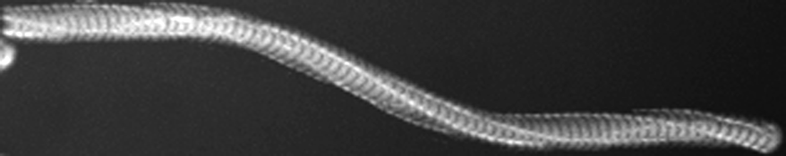
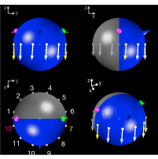
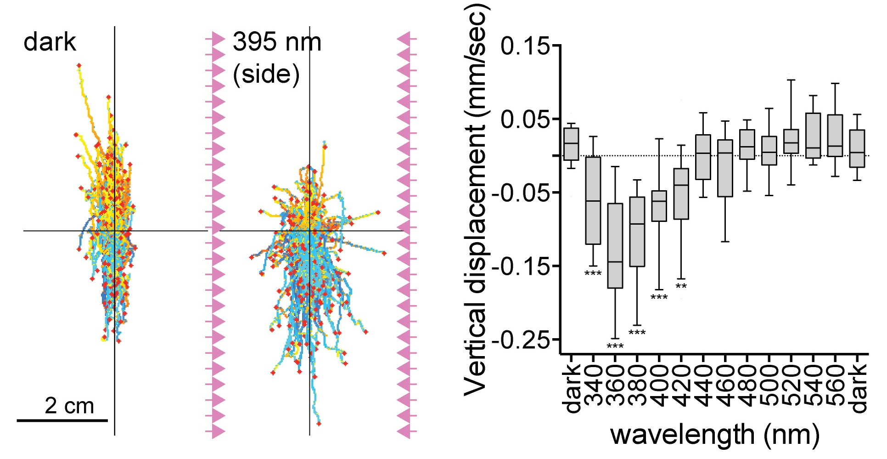
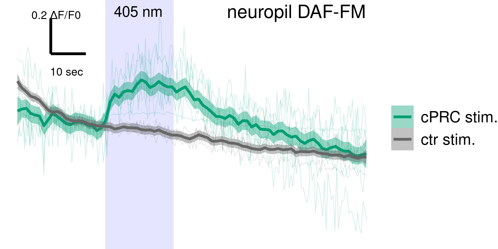
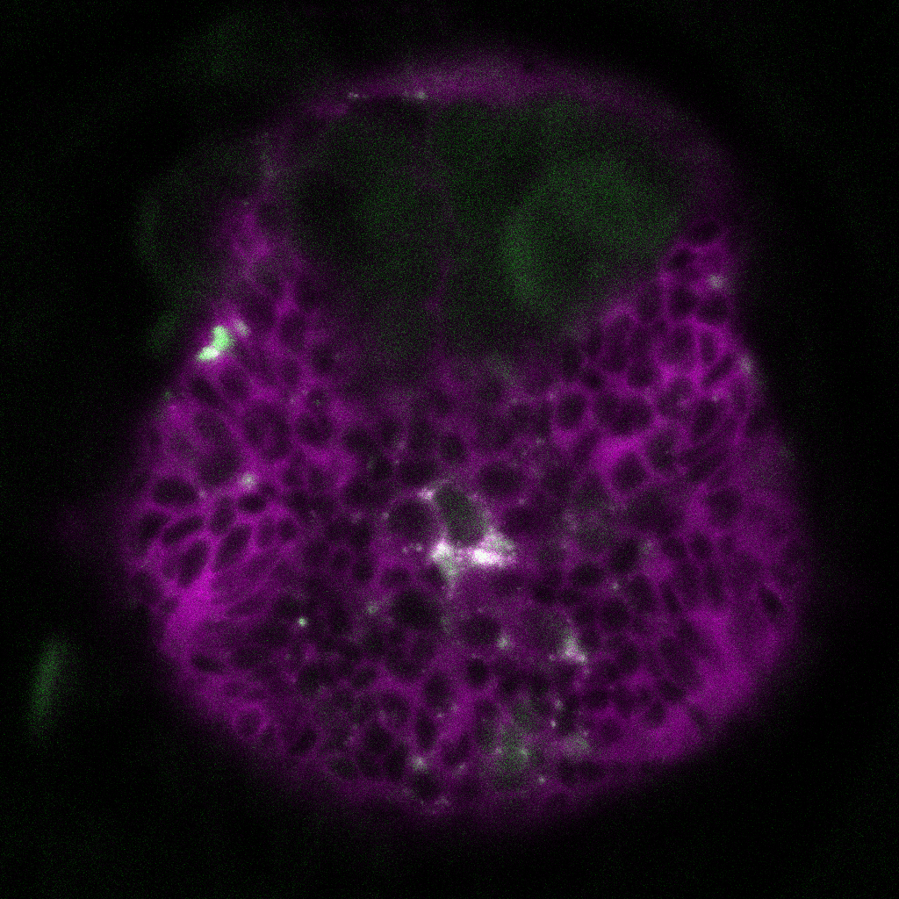
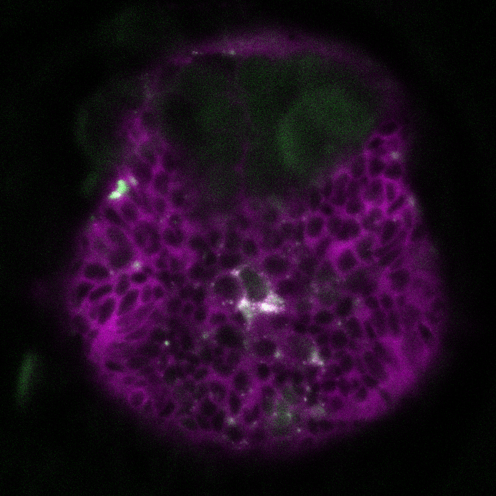
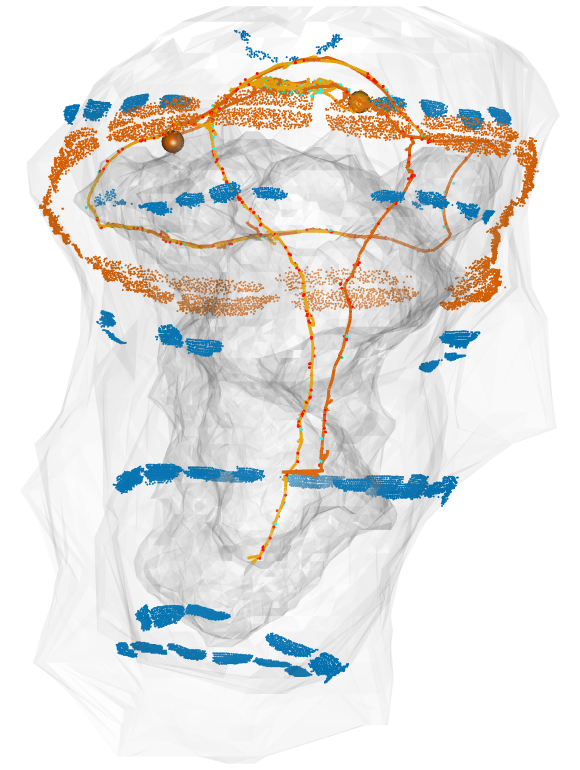
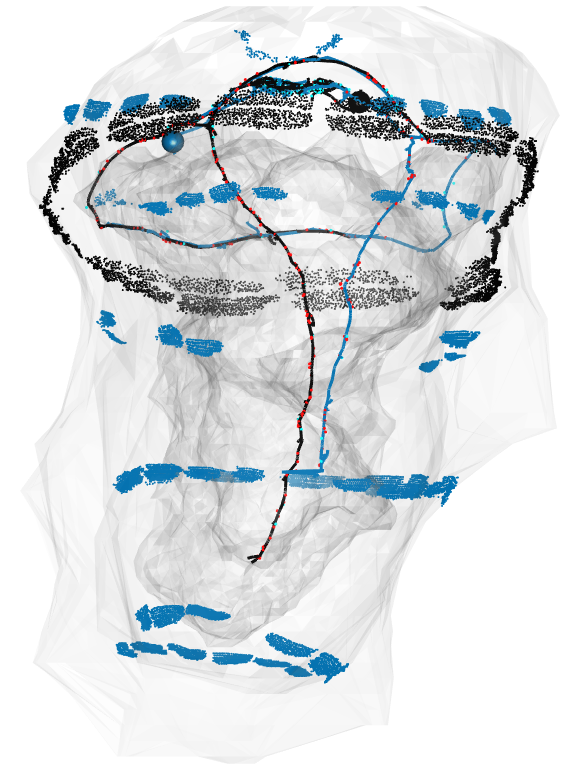

Embodied cognition in miniature brains and bodies of marine zooplankton
Pushing the Boundaries: Neuroscience, Cognition, and Life
June 25-27, 2023
Ciliated zooplankton larvae

Platynereis dumerilii

- breeding culture, full life-cycle
- embryos daily, year round
- genome sequence
- microinjection, transgenesis
- neuron-specific promoters and antibodies
- knock-out lines
- neuronal connectome
- whole-body neuronal activity imaging
- whole-animal pharmacology by bath application 😎
Synaptic connectome

Phototaxis


Helical swimming, sensing and turning are tightly linked
  
Whole-body coordination of cilia

No arrest in polycystin receptor mutant

Copepod attack
wild type polycystin mutant 
Pressure response in Platynereis larvae


Precise control of pressure in the pressure chamber

Pressure response is graded


Swimming speed increases, trajectories straighten
 ctr
ctr
 pressure
pressure

Ciliary beating increases under pressure


Pressure is sensed by photoreceptors with ramified cilia
 cPRC - ciliated Photoreceptor Cells
cPRC - ciliated Photoreceptor Cells
Circuitry of ciliary photoreceptors

Circuitry of ciliary photoreceptors

Mechanisms of barotaxis

UV-responding brain ciliary photoreceptors (cPRCs)
UV response in Platynereis larvae

NO is produced in the neuropil after UV stimulation
  

Mathematical modelling of the circuit


Up or down?
 ‘front-wheel drive’ head cilia fast
 ‘rear-wheel drive’ head cilia slow